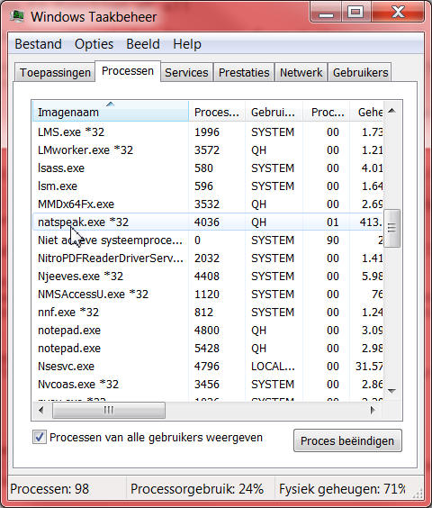

Problems with the proper functioning of NatLink?
NatLink does not seem to function at all- The first check is whether the window "Messages from NatLink" comes up when NatSpeak starts. If that is not the case, NatLink is not enabled, or you have multiple instances of natspeak running:
- Sometimes another "instance" of Dragon (natspeak.exe) is hanging around. Kill the process in the task management window:
(see below).
- and restart Dragon⁄NatSpeak.
- If the problem persists, try to (re)run the configuration program. This is done either from the
Start menu or from the files itself in the subdirectory as pointed out below.
Rerun the configure program from the files itself (not the Start menu):
- You need to do this only if the procedure from the Start menu does not work
- Go (in the Windows Explorer) to the natlink\confignatlinkvocolaunimacro subdirectory of your NatLink installation (often on C:\NatLink).
- Double click on the file start_configurenatlink.py (".py" may be hidden in your view of the Explorer)
- The configure GUI program is started in "elevated mode".
- Likewise the Command Line Interpreter (CLI) can be run by double clicking on start_natlinkconfigfunctions.py.
Commands are not recognised after opening another speech profile
- This sometimes happens after switching from English to another language or vice versa. It seems Dragon 11 sometimes doesn't callback correct to NatLink if the user has changed. Solution: restart Dragon, possibly check for other Dragon instances (see next).
NatSpeak crashes when editing Vocola command file- This problem should be solved with release 4.0. If not, please check your grammar files for the allResults options and calls of "os.startfile" (or functions that rely on this function).
- Explanation: after some testing this crash seems to be caused by the allResults flag being on in some (Unimacro) grammars. Currently the os.startfile command has been changed into a AppBringUp call of NatSpeak.
NatSpeak influences accuracy of dictate (issue solved??)
This is⁄was a very serious issue, which is the same time hard to test. Several users think this happened (including me, Quintijn, the maintainer of this website). The problem seems to have been
solved
, escpecially in Dragon 11.
When you still have indications of this, please report this on
the speechcomputing list
.
Vocola commands are not updated
How to revert to NatSpeak without NatLink:
1. Disable NatLink:- Disable NatLink (uninstall is NOT needed, just Disable)(in the Configure GUI of Configure CLI).
- If this does not work, you can disable NatLink manually by removing the following 2 lines at or near the bottom of the file nsapps.ini (on my NatSpeak 10, Windows Vista installation located on
C:\ProgramData\Nuance\NaturallySpeaking10).
[.Natlink]
App Support GUID={dd990001-bb89-11d2-b031-0060088dc929}
- Be sure no instances of NatSpeak are still running, see instructions at the top of this page.
- When you restart NatSpeak the "Messages from NatLink" should not show up any more.
2. If you still have problems with your speech profile⁄NatSpeak installation:
- Repair your NatSpeak (Dragon NaturallySpeaking) installation, do not forget possible Service Packs.
- Import your previously exported speech profiles (Manage Users -> Advanced -> Import...).
- If you did not export your speech profiles before starting with NatLink, you can try to Restore your automatic Backup of your speech profiles (Manage Users -> Advanced -> Restore...).
- As last resort make new speech profiles.
|